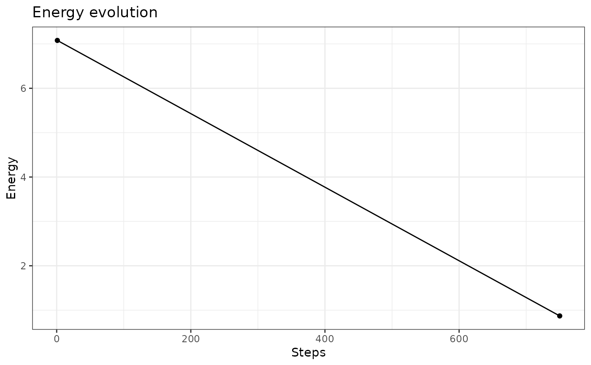
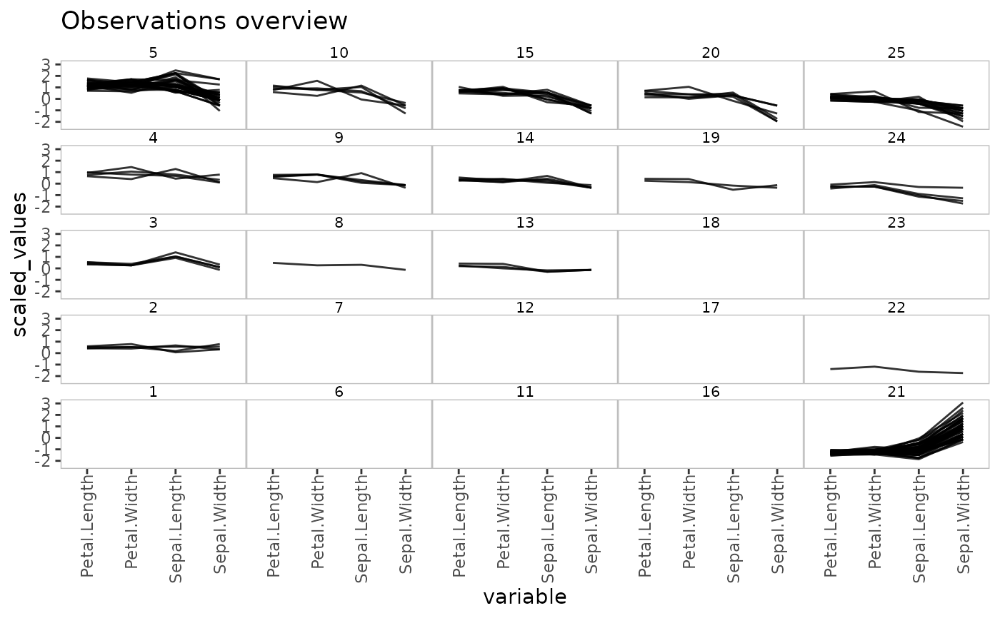
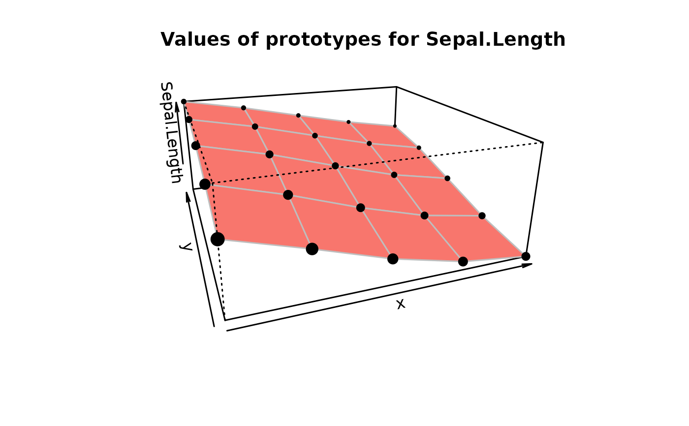
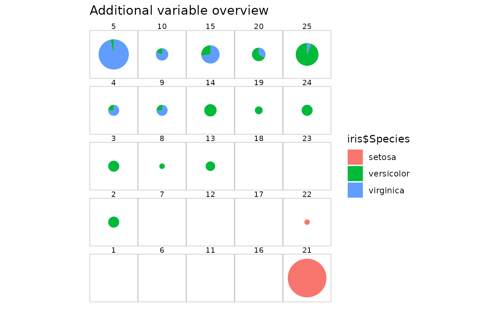

somRes class objectplot.somRes.RdProduce graphics to help interpreting a somRes object.
# S3 method for somRes plot( x, what = c("obs", "prototypes", "energy", "add"), type = switch(what, obs = "hitmap", prototypes = "color", add = "pie", energy = "energy"), variable = NULL, my.palette = NULL, is.scaled = if (x$parameters$type == "numeric") TRUE else FALSE, show.names = TRUE, names = if (what != "energy") switch(type, graph = 1:prod(x$parameters$the.grid$dim), 1:prod(x$parameters$the.grid$dim)) else NULL, proportional = TRUE, pie.graph = FALSE, pie.variable = NULL, s.radius = 1, view = if (x$parameters$type == "korresp") "r" else NULL, ... )
| x | A |
|---|---|
| what | What you want to plot. Either the observations ( |
| type | Further argument indicating which type of chart you want to have.
Choices depend on the value of |
| variable | Either the variable to be used for |
| my.palette | A vector of colors. If omitted, predefined palettes are
used, depending on the plot case. This argument is used for the following
combinations: all |
| is.scaled | A boolean indicating whether values should be scaled prior
to plotting or not. Default value is |
| show.names | Boolean used to indicate whether each neuron should have a
title or not, if relevant. Default to |
| names | The names to be printed for each neuron if
|
| proportional | Boolean used when |
| pie.graph | Boolean used when |
| pie.variable | The variable needed to plot the pies when
|
| s.radius | The size of the pies to be plotted (maximum size when
|
| view | Used only when the algorithm's type is |
| ... | Further arguments to be passed to the underlined plot function
(which can be |
See somRes.plotting for further details and more
examples.
trainSOM to run the SOM algorithm, that returns a
somRes class object.
# run the SOM algorithm on the numerical data of 'iris' data set iris.som <- trainSOM(x.data=iris[,1:4], nb.save=2) # plots # on energy plot(iris.som, what="energy")# on an additional variable: the flower species plot(iris.som, what="add", type="pie", variable=iris$Species)